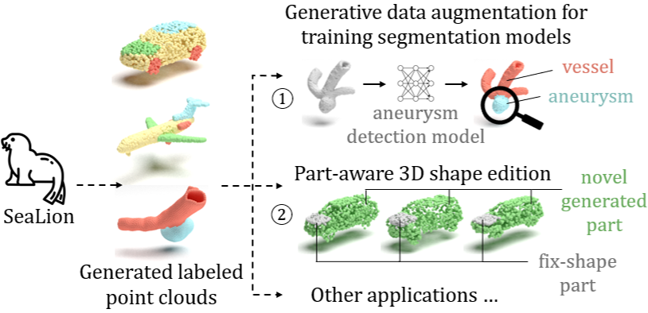
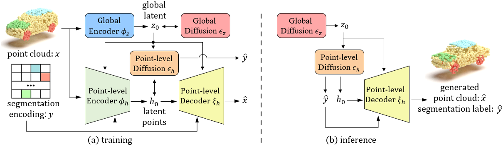
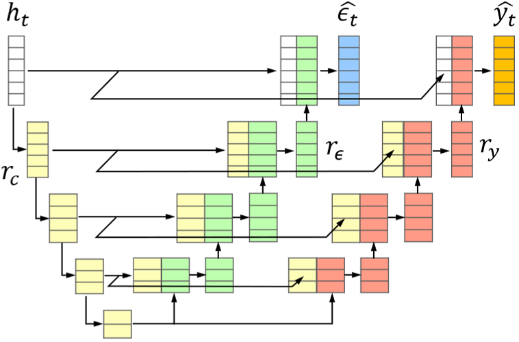

Denoising diffusion probabilistic models have achieved significant success in point cloud generation, enabling numerous downstream applications, such as generative data augmentation and 3D model editing. However, little attention has been given to generating point clouds with point-wise segmentation labels, as well as to developing evaluation metrics for this task. Therefore, in this paper, we present SeaLion, a novel diffusion model designed to generate high-quality and diverse point cloud with fine-grained segmentation labels. Specifically, we introduce the semantic part-aware latent point diffusion technique, which leverages the intermediate features of the generative models to jointly predict the noise for perturbed latent points and associated part segmentation labels during the denoising process, and subsequently decodes the latent points to point clouds conditioned on part segmentation labels. To effectively evaluate the quality of generated point clouds, we introduce a novel point cloud pairwise distance calculation method named part-aware Chamfer distance (p-CD). This method enables existing metrics, such as 1-NNA, to measure both the local structural quality and inter-part coherence of generated point clouds. Experiments on the large-scale synthetic dataset ShapeNet and real-world medical dataset IntrA, demonstrate that SeaLion achieves remarkable performance in generation quality and diversity, outperforming the existing state-of-the-art model, DiffFacto, by 13.33% and 6.52% on 1-NNA (p-CD) across the two datasets. Experimental analysis shows that SeaLion can be trained semi-supervised, thereby reducing the demand for labeling efforts. Lastly, we validate the applicability of SeaLion in generative data augmentation for training segmentation models and the capability of SeaLion to serve as a tool for part-aware 3D shape editing.

Figure 1: Leveraging the proposed semantic part-aware latent point diffusion technique, SeaLion generates high-quality point clouds with high inter-part coherence and accurate point-wise segmentation labels. The generated data has significant application potential, including enlarging the training sets for data-driven 3D segmentation models, particularly in medical examination domains where labeled data is scarce (①). Moreover, SeaLion can serve as an editing tool, allowing designers to easily replace parts within a 3D shape. ② shows examples of generated cars with varying shapes (green) and a fixed-shape hood (gray).

Figure 2
(a) Training: The generative model develops semantic part awareness by being trained to reconstruct input point clouds \(x\) guided by segmentation encodings \(y\), and to jointly predict the noise \(\hat{\epsilon}_t\) for perturbed latent points \(h_t\) and segmentation labels \(\hat{y}_t\) at diffusion step \(t\).
(b) Inference: Starting from Gaussian noise, the diffusion modules generate \(z_0\), \(h_0\), and \(\hat{y}\). Then, the conditional decoding guided by \(z_0\) and \(\hat{y}\) generates a point cloud \(\hat{x}\) that maintains strong alignment with \(\hat{y}\).

Figure 3: Data flow in the point-level diffusion module \(\epsilon_h\). The input, perturbed latent points \(h_t\) at step \(t\), is down-sampled and transformed to common representations \(r_c\) (yellow). Two parallel up-sampling paths concatenate \(r_c\) with task-specific features, \(r_\epsilon\) (green) and \(r_y\) (red), to separately predict the noise \(\hat{\epsilon_t}\) and the segmentation encoding \(\hat{y_t}\).
@inproceedings{Zhu2025SeaLionSP,
title={SeaLion: Semantic Part-Aware Latent Point Diffusion Models for 3D Generation},
author={Dekai Zhu and Yan Di and Stefan Gavranovic and Slobodan Ilic},
year={2025},
url={https://api.semanticscholar.org/CorpusID:278308917}
}